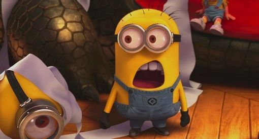
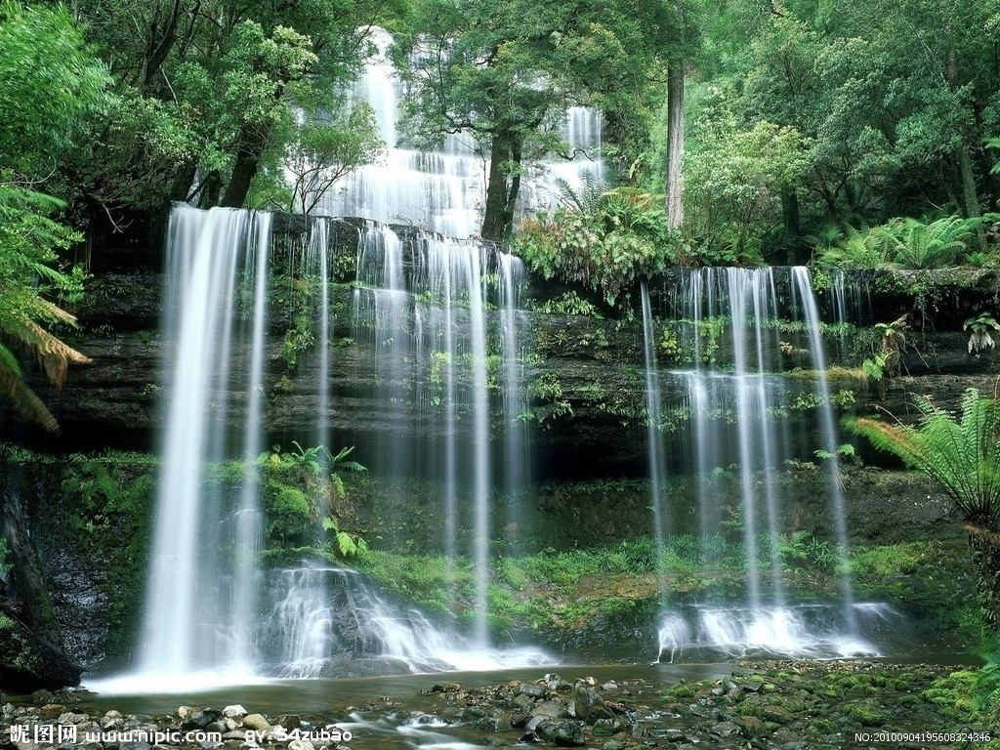

您的浏览器不支持audio元素
开始
00:00
00:00
停止


51区，位于美国内华达州南部林肯 郡，距离拉斯韦加斯市中心约130公里。这里一直被认为是美国秘密研制飞行器的地方。而由于1947年“罗斯威尔飞碟坠毁”疑云，这里也被冠以“美国地外生物研究中心”的名号。与不明飞行物有关的一切，似乎都被美国政府“隐藏”在这里。不过，尽管已在猜测、幻想、乃至电影中存在了数十年，但美国政府从来没有承认“51区”的存在，直到2013年。
51区，位于美国内华达州南部林肯 郡，距离拉斯韦加斯市中心约130公里。这里一直被认为是美国秘密研制飞行器的地方。而由于1947年“罗斯威尔飞碟坠毁”疑云，这里也被冠以“美国地外生物研究中心”的名号。与不明飞行物有关的一切，似乎都被美国政府“隐藏”在这里。不过，尽管已在猜测、幻想、乃至电影中存在了数十年，但美国政府从来没有承认“51区”的存在，直到2013年。